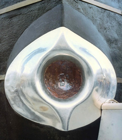
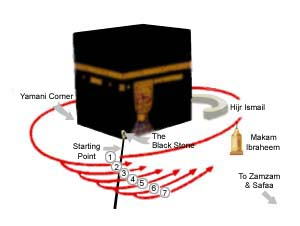
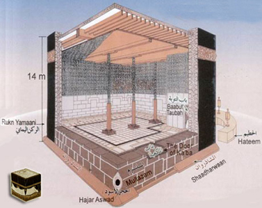

Au nom d’Allah le Clément, le Miséricordieux, Louanges à Allah.
Construction et déconstruction de la Ka'bah
La Ka'bah est un sanctuaire, savoir qu'Abraham l'a construite suffit à le prouver, c'est un lieu d'adoration et un refuge, elle n'a cependant aucun effet sur ceux qui tournent autour d'elle.
La Ka'bah a été construite quatre fois. La première fois est clairement inscrite dans le coran et la sunnah, ce fut quand Abraham et son fils Ismaël répondirent à un commandement divin :
" Et quand Abraham et Ismaël élevaient les assises de la Maison : "Ô notre Seigneur, accepte ceci de notre part ! Car c'est Toi l'Audient, l'Omniscient."
Sourate 2, verset 127
Dans la sunnah, de nombreux ahadith l'attestent, en voici un selon une chaîne d'autorité basée sur le récit d'Ibn Abbas :
"Abraham a dit : "O Ismaël Dieu m'a donné un ordre."
"Alors fais comme Il te l'a demandé", répondit-il.
"M'aideras-tu ?"
"Oui, je le ferai."
"Dieu m'a demandé de construire une maison juste ici", dit Abraham, pointant une certaine colline. Ainsi les deux construisirent les fondations de la maison, avec Ismaël apportant les pierres et Abraham construisant l'édifice." Al Bukhari
Suivant un passage pris dans l'histoire de La Mecque d'Al Azraqi, Abraham  a construit la Ka'bah avec les dimensions suivantes : 3,5 mètres de haut, 15 de long et 12 de large (cf. i'lam sajid, p46) et l'aurait laissé sans toit. Pour Al Suhayli , elle faisait 4,5 mètres de haut. (Uyun al athar 1/52).
a construit la Ka'bah avec les dimensions suivantes : 3,5 mètres de haut, 15 de long et 12 de large (cf. i'lam sajid, p46) et l'aurait laissé sans toit. Pour Al Suhayli , elle faisait 4,5 mètres de haut. (Uyun al athar 1/52).
La seconde fois que la Ka'bah a été reconstruite fut sous le commandement des Qurayshites avec la participation du prophète , avant sa prophétie. A l'époque, elle avait souffert de nombreuses catastrophes pendant plusieurs années dont des inondations qui l'affaiblirent, fissurant ses murs et ils n'eurent pas d'autres choix que de la reconstruire, leur vénération pour la Kabah était un héritage d'Abraham
, avant sa prophétie. A l'époque, elle avait souffert de nombreuses catastrophes pendant plusieurs années dont des inondations qui l'affaiblirent, fissurant ses murs et ils n'eurent pas d'autres choix que de la reconstruire, leur vénération pour la Kabah était un héritage d'Abraham . Le prophète
. Le prophète  et Al Abbas aurait déplacé les pierres de la Ka'bah d'après un hadith rapporté par Jaber ben Abdillah et répertorié dans le sahih de Bukhari.
et Al Abbas aurait déplacé les pierres de la Ka'bah d'après un hadith rapporté par Jaber ben Abdillah et répertorié dans le sahih de Bukhari.
Lorsque la Ka'bah fut reconstruite une guerre fut également évitée. Alors qu'ils avaient atteint le stade de la repose de la Pierre Noire à sa place, il y eut une querelle parmi les qurayshites pour savoir qui en aurait l'honneur.

La tribu d'Abd al Dar apporta un bol rempli de sang et avec les hommes d'Adi, ils mirent leurs mains dans le bol concluant le pacte de se défendre jusqu'à la mort. Cela dura plusieurs jours jusqu'à ce que Abu Ummayya Hudhaifa et AI-Mugheera AI-Makhzumi suggérèrent d'accepter le jugement de la première personne qui passerait par la porte de Bani Shaiba. La première fut le messager de la paix, l'homme le plus célèbre pour son honnêteté dans toute La Mecque, Muhammad  . Il mit la Pierre Noire au milieu d'un morceau de tissu, demanda au représentant de chaque tribu de tenir l'un des bords de la toile et de la porter à proximité de la place. Ensuite, le Prophète
. Il mit la Pierre Noire au milieu d'un morceau de tissu, demanda au représentant de chaque tribu de tenir l'un des bords de la toile et de la porter à proximité de la place. Ensuite, le Prophète  prit la Pierre Noire avec ses nobles mains et la remit à sa place.
prit la Pierre Noire avec ses nobles mains et la remit à sa place.
Cet incident montre la grande sagesse et le charisme du futur leader à régler les problèmes et à mettre fin aux disputes.
A cette occasion, ils augmentèrent sa hauteur et réduisirent sa longueur. La raison de ce changement de dimensions est du au fait qu'ils décidèrent de financer la reconstruction uniquement avec de l’argent propre. Cependant, la somme collectée ne fut pas suffisante, ils construisirent donc une maison plus petite.
Entre la Ka‘bah actuelle et Hijr Ismaël, mur en forme d'arc, on se trouve donc dans la Ka'bah.

Pendant le tawaf, il faut tourner à l'extérieur de ce mur, sinon notre tour de la maison n'est pas correct.
La troisième fois où la Ka'bah fut reconstruite se déroula durant le califat de Yazid Ben Mu'awiyah quand ses armées venues de Syrie la prirent d'assaut. Vers la fin de l'an 36 A H, Yazid envoya ses hommes à la Mecque contre Abdullah Ibn Az Zubayr sous le commandement d'Al Husayn ibn Numayr al Sakuni. Assiegeant Ibn Al Zubayr et attaquant la Ka'bah, ils causèrent son effondrement et son embrasement.
Ibn AI-Zubair et ses compagnons avaient pris refuge dans la sainte Mosquée, et construisirent autour de la Ka'bah des abris faits avec des tiges de roseaux, et également des structures en bois, pour les protéger de la chaleur du soleil et des pierres lancées de l'extérieur par les catapultes qu'AI-Hussein Ibn Numair avaient mis au sommet des monts Abu Qubais et Qa'iqan. Le kiswah fut mis en pièces et les pierres de la Sainte Ka'bah commencèrent à trembler. L'un des compagnons d'Ibn Al-Zubair alluma un feu, et une étincelle s'envola, enflammant la sainte Ka'bah. À cette époque, la Ka'bah était construite à la manière Quraishite : une couche de bois d'une couche de pierre. Cela arriva le samedi 3 Rabi AI-Awwal, 64 A. H.
A la suite de cela, Zubayr attendit la saison du pèlerinage où il consulta les gens en leur disant : "Conseillez moi pour la Ka'bah : dois-je la raser et la reconstruire ou en réparer les parties affaiblies?"
Ibn Abbas répondit : "Je crois que tu dois réparer ce qui en a été démoli et laisser telle quel la maison dont les pierres ont été les témoins de la soumission des gens à Dieu".
Ibn Zubayr dit ensuite : "Si l'un de vous voit sa maison brûler, il ne sera pas satisfait à moins de la reconstruire en entier. Cela sera encore plus juste pour la maison de Celui qui soutient! Je prierai trois fois mon Seigneur pour être guider, puis je ferai ce que je dois faire."
Après trois jours, il la détruisit complètement. Quand il eut fini Zubayr lui rendit ce qui lui avaient été enlevés en longueur et lui ajouta quelques mètres en hauteur, il ajouta aussi deux portes, une pour y entrer et une pour en sortir, c'est le hadith de Aïcha qui lui a donné le courage de le faire :
Elle a rapporté que le prophète  lui a dit :
lui a dit :
"Aisha, si les gens ne venaient pas de sortir récemment de leur ignorance, j'aurai ordonné que la Ka'bah soit démolie. Ensuite, je l'aurai restaurée avec ce qui lui a été enlevée (de sa longueur), je lui aurais fait une porte à l'est et une porte à l'ouest, j'aurai fait en sorte qu'elle soit érigée sur les fondations d'Abraham.
La quatrième fois suivit la mort de Zubayr, Muslim relate que quand Zubayr a été tué, Al Hajjaj écrivit au calife ben Marwan pour lui dire que Zubayr avait reconstruit la Ka'bah d'une manière qui avait rencontré l'approbation de ceux de bonne réputation à la Mecque. Abdel Malik répondit : "Ce que Zubayr a fait ne nous concerne pas. Approuve le rehaussement qu'il a fait peut importe sa longueur quant aux pierres qu'il a ajouté à la construction renvoie-les d'où elles viennent et ferme les portes qu'il a faite " Aussi il la démolie et la rebâtie.
Il est dit qu'Harun Al Rashid décida de démolir la Ka'bah une nouvelle fois pour la reconstruire à la manière d'az Zubayr. Cependant Malik ben Anas lui dit : "Je te conseille pour l'amour de Dieu, ô commandeur des croyants, de ne pas transformer cette demeure en instrument de divertissement pour les rois qui viendront après toi. Si cela arrive, celui qui voudra la changera comme bon lui semblera et les gens n'auront plus de respect pour elle." Et, ainsi, il le dissuada de le faire.
Ce sont les quatre occasions où nous pouvons affirmer que la Ka'bah a été construite. Quant à la cinquième elle fait l'objet de contestations, elle concerne la période précédant la construction d'Abraham. La Ka'bah existait-elle avant cela?
Suivant certains récits, la première personne à construire la Ka'bah fut Adam . Dans le livre de Bayhaqi, dala' il al nubuwah, un hadith rapporté par Abdullah ibn Umar dit :
. Dans le livre de Bayhaqi, dala' il al nubuwah, un hadith rapporté par Abdullah ibn Umar dit :
Le prophète a dit :
a dit :
"Gabriel a été envoyé par Dieu à Adam et Eve pour leur dire de Lui construire une maison. Il leur donna les instructions à suivre pour la faire. Adam commença à creuser pendant qu'Eve cherchait des pierres jusqu'à ce qu'il frappa de l'eau. Une voix l'appela ensuite par-dessous disant : "Cela suffira Adam". Quand ils eurent fini de la construire, Dieu leur inspira d'accomplir la circumambulation autour d'elle. On dit à Adam : "Tu es le premier de tous les hommes et c'est la première maison."
Les siècles passèrent jusqu'à ce que Noé  y accomplisse à sa tour un pèlerinage, puis d'autres siècles s'écoulèrent jusqu'à ce qu'Abraham
y accomplisse à sa tour un pèlerinage, puis d'autres siècles s'écoulèrent jusqu'à ce qu'Abraham  élèva ses fondations.
élèva ses fondations.
Al Bayhaqi ajouta Ibn Lahi'ah est le seul rapporteur à citer ce hadith qu'il allègue au prophète , cependant il est connu qu'Ibn Lahi'ah est un narrateur faible auquel on ne peut faire confiance. D'autres récits et narrations ont un sens proche de celui-là, cependant ils contiennent des éléments de faiblesse ou d'incorrection.
, cependant il est connu qu'Ibn Lahi'ah est un narrateur faible auquel on ne peut faire confiance. D'autres récits et narrations ont un sens proche de celui-là, cependant ils contiennent des éléments de faiblesse ou d'incorrection.
Si nous acceptons ces récits (de faibles valeurs), la Ka'bah aurait été construite cinq fois, cependant il est préférable d'accepter ce dont nous sommes sûrs, c'est-à-dire quatre fois.

Pour les autres fois, avant celles-ci ou entre celles dont nous avons parlé, nous devons en laisser la connaissance à Dieu, tout en sachant que la Ka'bah a été réparée et rénovée de nombreuses fois.
Source : Fiqh as-sira d'Al Buti. (Partie sira, biographie du prophète Mohammed)
Voir aussi : http://www.amrkhaled.net/articles/articles858.html
Notes : Le adhra' fait environ 1/2 mètre.
Que la paix et les bénédictions d'Allah soient sur le prophète Mohammad, celui qui a tenu sa promesse, le confident. Ô Allah nous ne savons que ce que Tu nous as appris, c’est Toi qui détiens la science. Ô Allah apprend nous ce qui nous apportera du bien et fais nous profiter du bien de ce que Tu nous as appris et augmente nos connaissances. Et embelli le bien à nos yeux et aide nous à le suivre. Et enlaidi le mal à nos yeux et aide nous à nous en détourner. Et mets nous parmi ceux qui écoutent la parole et suivent les meilleures d’entre elles. Et fais de nous tes bons adorateurs par Ta miséricorde.
Gloire à Toi Seigneur, que Tes louanges soient célébrées, j'atteste qu'il n'y a de divinité que Toi, j'implore Ton pardon et je reviens vers Toi repentante.